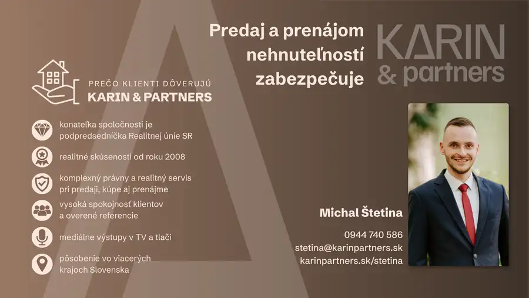
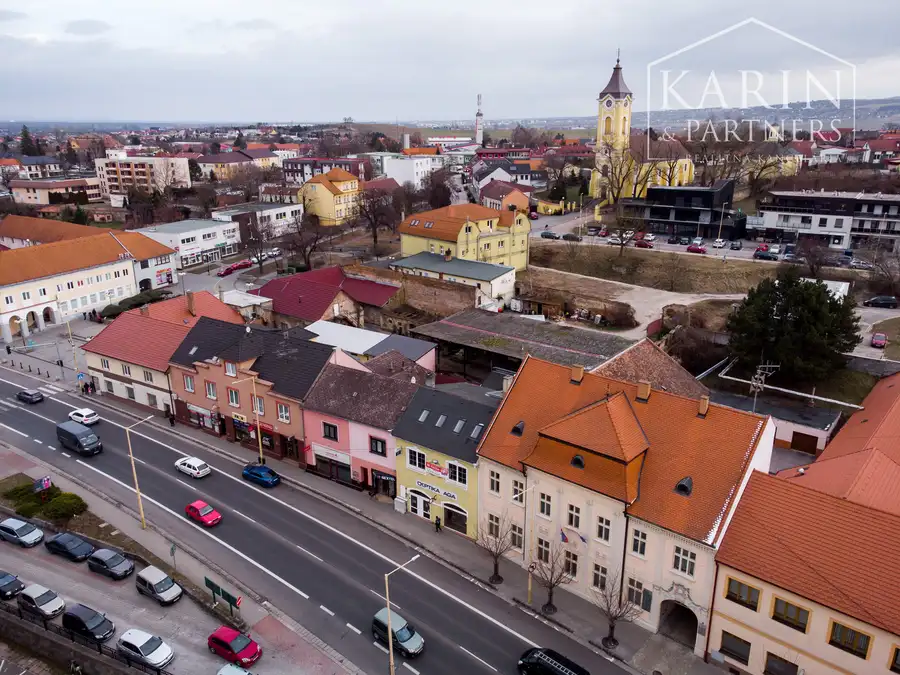
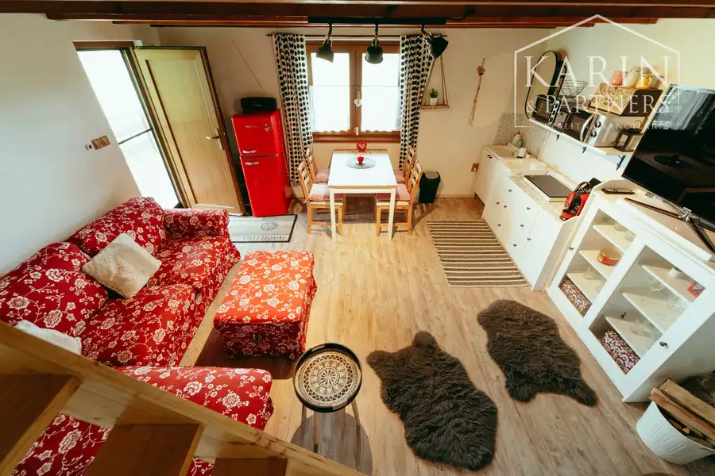

3i rodinný dom s veľkým pozemkom – Gbely, Kolónia
Gbely
- Plocha143 m²
- StavKompletná rekonštrukcia
- VlastníctvoOsobné
O nehnuteľnosti
Ponúkame na predaj krásny a priestranný rodinný dom v tichej a vyhľadávanej lokalite mesta Gbely, na ulici Kolónia. Nehnuteľnosť prešla v posledných rokoch významnou rekonštrukciou a prístavbou, vďaka čomu ponúka komfortné a moderné bývanie pripravené pre nových majiteľov.ZÁKLADNÉ ÚDAJE:- Lokalita: Gbely, ulica Kolónia- Podlahová plocha domu: 122 m²- Rozloha pozemku: cca 1 142 m² (zastavané plochy, nádvoria a záhrada)- Stavebný materiál: kombinácia tehly a kvádra- Mesačné náklady sa pohybujú na úrovni 270 € (z toho 250 € predstavuje elektrina zahŕňajúca kúrenie, ohrev vody a bežnú spotrebu domácnosti, 20 € tvorí voda). Do tejto sumy je premietnutý fakt, že súčasní majitelia na energiách nešetrili.REKONŠTRUKCIA A STAV DOMU:Dom prešiel viacerými fázami obnovy (najnovšie úpravy v rokoch 2024–2025), čo zaručuje jeho výborný technický stav:- 2015: K pôvodnej stavbe sa pristavovala druhá, menšia časť domu.- 2017: Kompletná výmena strechy.- 2024: Kompletné zateplenie celej fasády domu.- 2024: Osadenie nových plastových okien s izolačným 3-sklom.- 2024: Nová kompletná elektroinštalácia.- 2024: Vybudovanie nového murovaného oplotenia s pohodlnou elektrickou bránou na diaľkové ovládanie.INŽINIERSKE SIETE A NÁKLADY:Dom aktuálne funguje výhradne na elektrickú energiu, no je plne pripravený aj na iné alternatívy.- Siete: Elektrina, obecný vodovod, kanalizácia. Na pozemku sa nachádza aj vlastná studňa.- Plyn: Plyn je dovedený (dom má prípojku), momentálne je však odpojený, keďže súčasní majitelia všetko riešia elektrinou. V prípade záujmu je možné sa na plyn opäť napojiť.- Vykurovanie: Zabezpečené elektrickými radiátormi.- Ohrev vody: Elektrický bojler.VYBAVENIE A ZARIADENIE (Čo zostáva a čo odchádza):Interiér je vkusne a moderne zariadený (ako môžete vidieť na fotografiách). Pri predaji dochádza k nasledovným dohodám:- V dome zostáva kuchynská linka so 7-ročnou chladničkou (upozorňujeme však, že elektrická rúra a umývačka riadu sú nefunkčné).- Súčasní majitelia si pri sťahovaní berú sedaciu súpravu, televízor a obrazy.EXTERIÉR A POZEMOK: K domu prislúcha krásny, rovinatý a veľkorysý pozemok s rozlohou vyše 11 árov. Na dvore sa nachádza príjemná drevená zastrešená terasa (altánok), ktorá je ideálna na letné grilovanie a posedenia s rodinou. Nové oplotenie zaručuje dokonalé súkromie a bezpečnosť.Tento dom je ideálny pre rodinu, ktorá hľadá pokojné bývanie bez nutnosti veľkých okamžitých investícií do rekonštrukcie, s dostatkom priestoru vnútri aj vonku.PROFESIONÁLNY SERVIS V CENE:V cene nehnuteľnosti je zahrnutý kompletný servis:- Vypracovanie zmlúv a návrhu na vklad do katastra.- Úhrada správneho poplatku (kolok). - Prevod energií a protokolárne odovzdanie.- Odborné realitné a právne poradenstvo.FINANCOVANIE A HYPOTEKÁRNY SERVIS:Vzhľadom na požiadavku majiteľa na čo najrýchlejší a najbezpečnejší priebeh transakcie preferujeme záujemcov, ktorí využijú náš interný hypotekárny servis. Vďaka tomu, že celý finančný proces zastrešujeme pod jednou strechou cez našich certifikovaných špecialistov, vieme garantovať plynulosť obchodu a vyhnúť sa zbytočným zdržaniam, ktoré často vznikajú pri komunikácii s externými bankami a poradcami. Financovanie riešené po vlastnej osi vopred nevylučujeme, avšak pri konečnom výbere kupujúceho bude majiteľ prioritne zohľadňovať garanciu a rýchlosť dodania financií, ktorú vieme najlepšie a najrýchlejšie zabezpečiť práve pri využití našich služieb - kalkulácia hypotéky: https://vizitka.brokeria.sk/michal.stetinaKONTAKT NA MAKLÉRA:Michal Štetina+421 944 740 586stetina@karinpartners.skwww.karinpartners.sk/stetina
Parametre
| Druh | Rodinný dom |
|---|---|
| Dátum zverejnenia | 12. 7. 2026 |
| Plocha pozemku | 1142 m² |
| Stav nehnuteľnosti | Kompletná rekonštrukcia |
| Typ | Predaj |
| Vlastníctvo | Osobné |
| Zastavaná plocha | 143 m² |
| Úžitková plocha | 143 m² |
Kde to je


Mohlo by Vás zaujímať

DomNové2 315 000 €Hľadáme: rodinný dom v meste Holíč Holíč 110 m² Hľadám rodinný dom pre konkrétneho klienta v meste Holíč, ulica nie je rozhodujúca. Ak disponujete takýmto rodinným domom alebo poznáte niekoho, kto…
Komerčné priestoryNové10 149 000 €Na predaj podnikateľský objekt, Holíč Holíč 260 m² V zastúpení majiteľa ponúkame na predaj podnikateľský objekt v úplnom centre mesta Holíč, na ulici Bratislavská.NA PREDAJ SÚ 2/3 BUDOVY! Základné…
Chalupa, rekreačný domčekNové10 69 000 €Útulná murovaná chata s krásnym výhľadom – Osuské Osuské 60 m² Základné údaje:- Lokalita: ZO Opendáky, Osuské (len 8 km od Senice)- Cena: 69 000 € (vrátane kompletného zariadenia) - Úžitková plocha: 60 m² -…